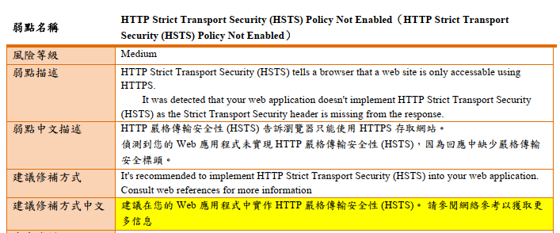
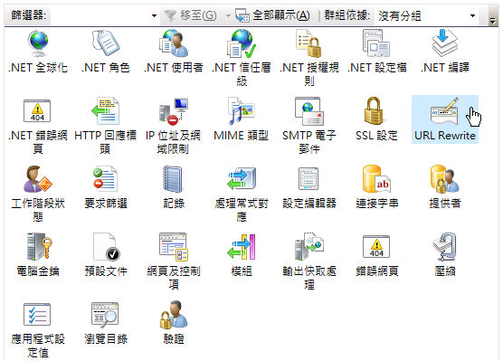
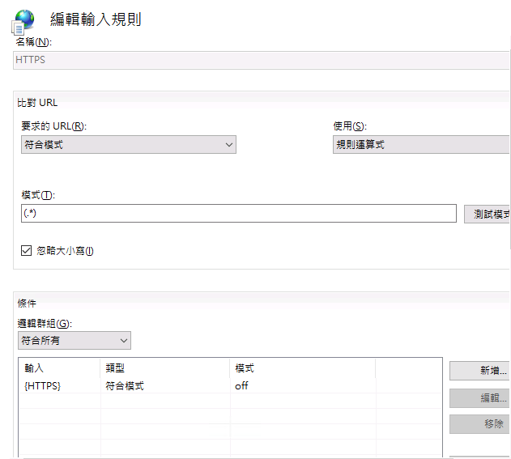
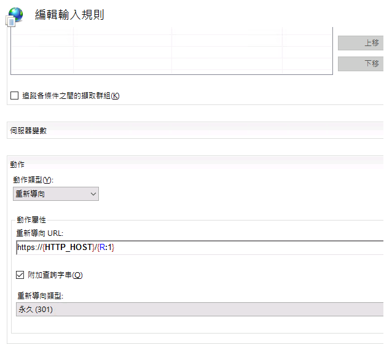
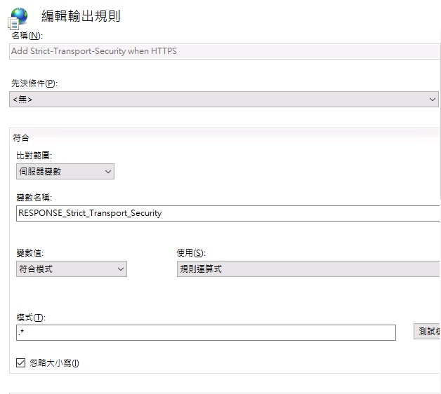
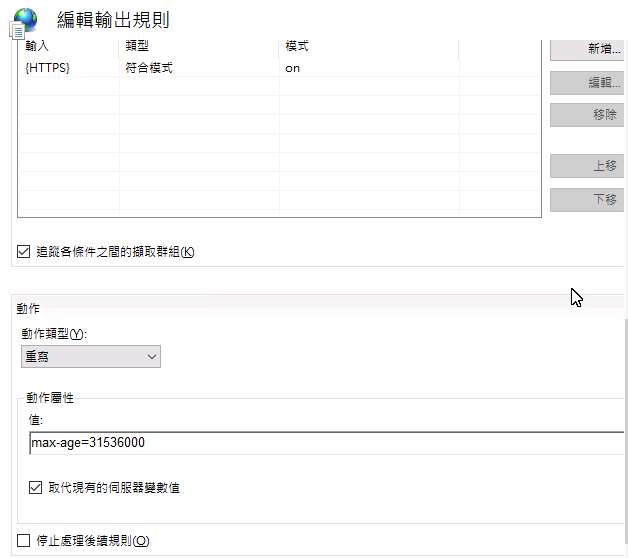

防駭客必學！一次搞懂 IIS HSTS 設定，告別 HTTPS 降級攻擊
你的網站已經設定 HTTPS 了嗎？光設定 HTTPS 還不夠——本文拆解 HSTS 的運作原理，並示範在 IIS 上的三種設定方式。
問題發現：弱點掃描警告
最近在進行專案的弱點掃描時，發現了一個低風險的問題：

弱點說明提到：應用程式未設定 HTTP Strict Transport Security (HSTS) 標頭。這可能讓攻擊者有機會進行 HTTPS 降級攻擊，竊取敏感資訊。
什麼是 HSTS？為什麼這麼重要？
HSTS 全名是 HTTP Strict Transport Security，定義於 RFC 6797，是一個 HTTP 擴充標準。它的主要功能是：
- 強制瀏覽器使用 HTTPS 與網站進行通訊
- 有效防禦 SSL 剝離攻擊
- 保護使用者的敏感資訊
- 避免憑證警告被忽略
HSTS 運作原理
讓我們看看 HSTS 是如何運作的：
- 使用者第一次存取網站
- 伺服器在回應中加入 HSTS 標頭
- 瀏覽器記住這個安全設定
- 之後瀏覽器在發出請求前，會於本機直接將 HTTP 升級為 HTTPS（307 Internal Redirect），不會先送出不安全的請求
- 在瀏覽器已記住 HSTS 政策後，降低 SSL stripping 類降級攻擊的機會
HSTS 有一個不能省略的限制：一般情況下，瀏覽器要先成功收到一次 HTTPS 回應，才會記住這個政策。第一次連線若從 HTTP 開始，仍存在被攔截的窗口；HSTS preload 能補這段，但代價是網域與所有子網域都要長期維持 HTTPS。
HSTS 的三種設定方式
在 IIS 中有三種方式可以設定 HSTS。Windows Server 2019、2022 這類 IIS 10.0 1709 以後的版本，優先用內建的 <hsts>；更舊的 IIS 才需要後兩種。
1. IIS 內建 HSTS（IIS 10.0 1709 以上，建議使用）
IIS 10.0 1709 起，網站設定多了一個 <hsts> 元素，加 HSTS 標頭和 HTTP 轉 HTTPS 都能一次處理，不用另裝模組。它寫在 applicationHost.config 的 <site> 底下，不是網站自己的 Web.config。微軟文件寫明 1709 沒有對應的 IIS 管理員介面，所以用 appcmd 設定（把 Contoso 換成你的站台名稱）：
1 | :: 以系統管理員身分執行；%windir%\system32\inetsrv\appcmd.exe |
寫進設定檔的結果長這樣：
1 | <site name="Contoso" id="1"> |
enabled 開了之後，IIS 只在 HTTPS 回應加上 Strict-Transport-Security，不用自己寫條件。redirectHttpToHttps 會把 HTTP 請求的 scheme 換成 https、丟掉原本的連接埠，所以 HTTPS 必須跑在標準的 443；用非標準埠的站台別開這個，改用下面的 URL Rewrite 規則（它的 {HTTP_HOST} 會帶著原本的主機與連接埠，非標準埠要自己把目標埠寫進轉址網址）。includeSubDomains 的風險跟下面一樣，所以範例沒開；子網域都盤點完、確定全部支援 HTTPS，再多跑一行 "/[name='Contoso'].hsts.includeSubDomains:True"。用了這個方法，後面「實務操作」的兩個步驟都可以省略。
2. 使用 CustomHeaders（簡單但不夠完善）
1 | <system.webServer> |
注意：
includeSubDomains會讓所有子網域也強制走 HTTPS。若有任何子網域尚未支援 HTTPS，加上這個指令前請先確認，否則該子網域會完全無法存取。
3. 使用 URL Rewrite（舊版 IIS 建議使用）
先決條件：URL Rewrite 方式需要額外安裝 IIS URL Rewrite Module 2.x，它並非 IIS 內建模組。安裝後才會在 IIS 管理員出現「URL Rewrite」項目。
1 | <system.webServer> |
實務操作：在 IIS 上設定 HSTS
以下是用 URL Rewrite 的做法，適合 IIS 10.0 1709 之前的版本，或 HTTPS 不在 443 埠的站台。
步驟一：設定 HTTPS 重新導向
開啟 IIS 管理員
選擇你的網站，找到「URL Rewrite」模組

新增輸入規則，設定如下：
- 名稱：HTTP to HTTPS redirect
- 模式：(.*)
- 條件：{HTTPS} 選「符合模式」，填入 ^OFF$
- 動作：選「重新導向」，URL 填 https://{HTTP_HOST}/{R:1}


步驟二：設定 HSTS 輸出規則
- 在「URL Rewrite」模組中新增輸出規則
- 設定內容：
- 名稱：Add Strict-Transport-Security when HTTPS
- 變數名稱：RESPONSE_Strict_Transport_Security
- 模式：.*
- 條件：{HTTPS} 選「符合模式」，填入 ^ON$
- 動作：選「重寫」，值填入
max-age=31536000; includeSubDomains

Web.config 變更通常會讓 IIS 自動載入新設定，不必把「重新啟動網站」當固定步驟。真正要確認的是 HTTPS 回應裡有沒有正確的 Strict-Transport-Security 標頭。
常見問題 Q&A
Q1: 設定後出現重新導向次數過多怎麼辦？
如果 TLS 在反向代理、負載平衡器或 WAF 終止，後端 IIS 看到的 {HTTPS} 可能永遠是 OFF。這時可在「已確認代理會覆寫、外部請求無法偽造」的前提下，改判斷 X-Forwarded-Proto：
1 | <conditions> |
不要直接信任任何用戶端送來的 X-Forwarded-Proto。代理層必須先移除外部同名標頭，再寫入自己的值；否則攻擊者可以偽造它。HTTP 重新導向規則也要用同一套判斷，否則會出現無限重新導向。
內建 <hsts> 在這種架構下沒有地方改判斷條件：IIS 收到的是 HTTP，標頭不會加，開了 redirectHttpToHttps 還會一直轉址。TLS 在代理層終止時，HSTS 標頭交給代理層加，或改用上面的 URL Rewrite 規則。
Q2: 要設定多久的 max-age 比較好？
- 初次導入：可先設 300 秒，出問題時最多等 5 分鐘讓瀏覽器忘記 HSTS 政策
- 正式環境：一年（31536000 秒）是普遍起點，兩年（63072000 秒）是 OWASP 建議值
max-age控制的是 HSTS 政策快取，不是 301 重新導向快取。兩者不要混在一起排查- 若要申請 HSTS Preload List，除了
max-age至少一年、includeSubDomains與preload，還要有有效憑證、同一主機的 HTTP 重新導向到 HTTPS，且所有子網域都能長期提供 HTTPS。送出前先確認自己承受得起這個承諾
Q3: 如何驗證設定是否成功？
- 用
curl -I https://example.com或瀏覽器開發者工具檢查 HTTPS 回應標頭 - 使用 SSL Labs 測試
- 用全新瀏覽器設定檔測 HTTP 重新導向；已記住 HSTS 的瀏覽器可能在本機直接升級，不能拿來證明伺服器真的有回 redirect
參考資料
結語
HSTS 設定本身不複雜，麻煩的是第一次連線、反向代理與子網域。我的做法會先用短 max-age 驗證 HTTPS 回應，再逐步拉長；includeSubDomains 和 preload 則等所有子網域盤點完才開。這兩個開關的影響比加一行 header 大得多。
相關文章
同一台 IIS 在弱掃報告上常一起出現的協定版本問題：別急著關掉 TLS 1.2：升級 TLS 1.3 前該懂的 Windows 相容性真相。設定寫了卻沒生效的另一個例子：PHP2Shell 是什麼？緩解設定寫錯地方，一個 .htaccess 就蓋回去。